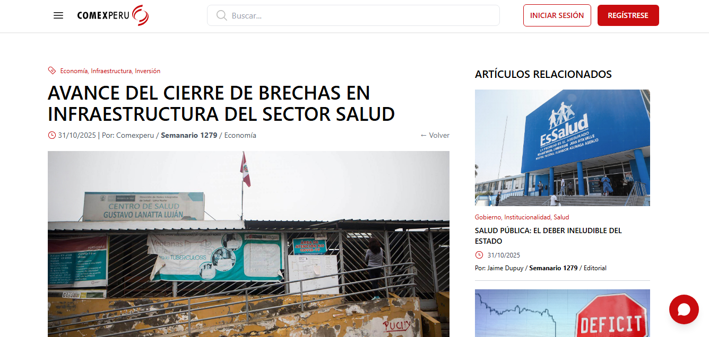
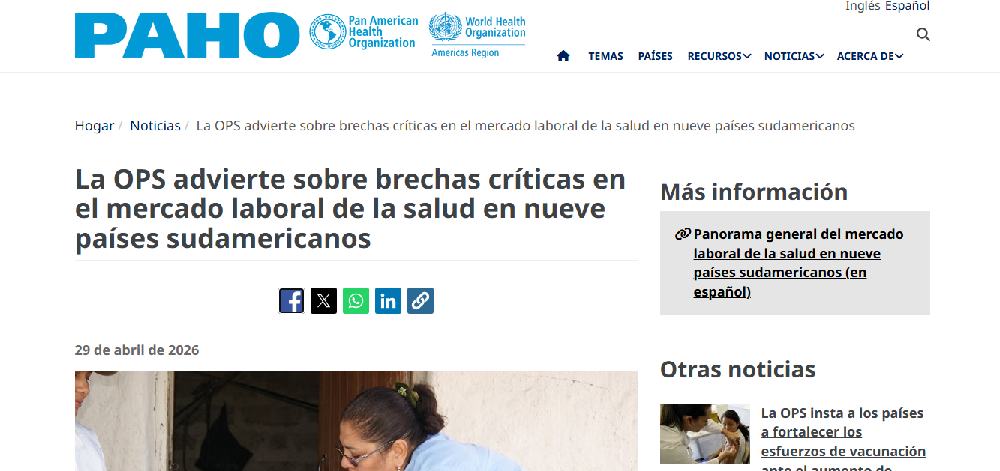
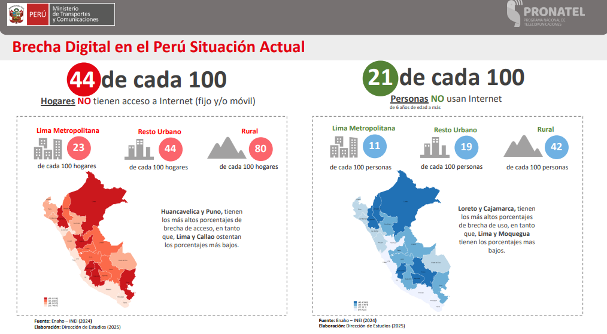

Reducción del peso de modelos de inteligencia artificial para habilitar diagnóstico médico asistido en zonas rurales del Perú, sin necesidad de GPU ni internet.
Equipo de Investigación
Asesor: Ferdinand Pineda Ancco · Co-Asesor: Nemias Saboya Rios
En las zonas rurales del Perú, tres brechas simultáneas impiden que el personal de salud pueda diagnosticar a tiempo enfermedades identificables por imagen. Los modelos de IA actuales no pueden desplegarse en este contexto sin ser previamente optimizados.
📰 Respaldado por fuentes oficiales



La gran mayoría de postas y centros de salud rurales carecen de equipamiento e infraestructura tecnológica adecuada.
Perú tiene la menor densidad de especialistas de Sudamérica, con un déficit de 9,613 médicos especialistas a nivel nacional.
| País | Esp./10,000 hab. |
|---|---|
| Uruguay | 46.3 |
| Argentina | 40.6 |
| Ecuador | 38.5 |
| Colombia | 25.4 |
| Perú | 7.3 |
En Loreto y Amazonas: < 3 especialistas por cada 10,000 hab. El 85% de los médicos se concentra en zonas urbanas.
OPS — Panorama del mercado laboral de la salud en nueve países de América del Sur, 2026El 84% de los centros poblados con establecimientos de salud no tiene acceso a internet fijo (octubre 2025).
| Región | Sin internet fijo |
|---|---|
| Huánuco | 98.0% |
| Ucayali | 97.9% |
| Pasco | 97.5% |
| Loreto | 95.9% |
| Cajamarca | 95.4% |
Sin la intervención del PRONATEL la brecha alcanzaría el 94%. La cobertura planificada al 2027+ cubre solo una fracción de los 95,000+ centros poblados rurales.
PRONATEL / ENAHO-INEI, 2025El pipeline propuesto optimiza modelos de diagnóstico (EfficientNetV2, MobileNetV4, YOLO26) en tres etapas:
Desarrollar un método de optimización de modelos de visión computacional aplicados a imágenes médicas para reducir el costo computacional sin comprometer significativamente las métricas de rendimiento diagnóstico, y habilitar su despliegue en dispositivos con recursos restringidos.
Entrenamiento con Transfer Learning y AdamW. Se registran métricas "techo" y "suelo" en MLflow.
Eliminación de neuronas de baja importancia (método Taylor). Reduce parámetros con pérdida controlada.
Reentrenamiento del modelo podado con Knowledge Distillation para recuperar precisión perdida.
Conversión de pesos FP32 → INT8 con SmoothQuant. Reduce el tamaño hasta 4× y acelera la inferencia.
Comparación exhaustiva de todas las iteraciones: precisión diagnóstica vs. costo computacional.
La fase más crítica para habilitar el despliegue en dispositivos de recursos limitados
Representación visual del espacio en memoria
| Dataset | Modelo | Tamaño F1 | Tamaño F4 | Δ Tamaño | AUC F1 | AUC F4 | Δ AUC | Accuracy F1 | Accuracy F4 | Δ Acc |
|---|---|---|---|---|---|---|---|---|---|---|
| Retino. Diabética | YOLOv26m | 41.64 MB | 10.95 MB | ↓ 73.7% | 0.9934 | 0.9873 | −0.006 | 95.1% | 96.2% | +1.1% |
| Cáncer Oral | YOLOv26m | 41.64 MB | 10.95 MB | ↓ 73.7% | 0.9427 | 0.9323 | −0.010 | 90.9% | 86.1% | −4.9% |
| Melanoma Piel | YOLOv26n | 6.28 MB | 1.98 MB | ↓ 68.5% | 0.8837 | 0.8974 | +0.014 | 89.8% | 90.0% | +0.3% |
| Retino. Diabética | EfficientNetV2-S | 81.57 MB | 22.11 MB | ↓ 72.9% | 0.9873 | 0.9575 | −0.030 | 96.2% | 75.1% | −21.1% |
| Melanoma Piel | MobileNetV4-M | 34.17 MB | 8.95 MB | ↓ 73.8% | 0.8896 | 0.4747 | −0.415 | 89.7% | 88.8% | −0.9% |
Medición de latencia e inferencia por segundo en CPU, comparando el modelo original (Fase 1) con el modelo cuantizado (Fase 4). Los valores de MobileNetV4 y EfficientNetV2 son promedios sobre los tres datasets; YOLOv26n corresponde a melanoma de piel y YOLOv26m al promedio de retinopatía diabética y cáncer oral.
| Modelo | Tamaño F1 | Tamaño F4 | Compresión | Latencia F1 | Latencia F4 | Speedup lat. | Throughput F1 | Throughput F4 | Speedup thr. |
|---|---|---|---|---|---|---|---|---|---|
| MobileNetV4-M | 32.6 MB | 8.5 MB | 3.8× | 22.7 ms | 7.2 ms | 3.2× | 62 img/s | 176 img/s | 2.8× |
| EfficientNetV2-S | 77.8 MB | 21.1 MB | 3.7× | 59.8 ms | 49.7 ms | 1.2× | 21 img/s | 18 img/s | 0.8× |
| YOLOv26n-cls (melanoma) | 6.0 MB | 1.9 MB | 3.2× | 8.6 ms | 6.6 ms | 1.3× | 216 img/s | 189 img/s | 0.9× |
| YOLOv26m-cls (ojo/oral) | 39.7 MB | 10.4 MB | 3.8× | 38.5 ms | 38.2 ms | 1.0× | 28 img/s | 24 img/s | 0.9× |
| Dataset | Modelo | Latencia F1 | Latencia F4 | Throughput F1 | Throughput F4 | Compresión |
|---|---|---|---|---|---|---|
| Retinopatía diabética | MobileNetV4-M | 23.1 ms | 7.2 ms | 61.4 img/s | 184.6 img/s | 3.82× |
| Cáncer oral | MobileNetV4-M | 23.0 ms | 7.1 ms | 61.9 img/s | 185.7 img/s | 3.82× |
| Melanoma de piel | MobileNetV4-M | 22.0 ms | 7.2 ms | 62.7 img/s | 158.3 img/s | 3.82× |
| Retinopatía diabética | EfficientNetV2-S | 65.4 ms | 48.3 ms | 17.3 img/s | 17.4 img/s | 3.69× |
| Cáncer oral | EfficientNetV2-S | 56.9 ms | 50.1 ms | 21.3 img/s | 18.3 img/s | 3.69× |
| Melanoma de piel | EfficientNetV2-S | 56.9 ms | 50.8 ms | 24.9 img/s | 17.4 img/s | 3.69× |
| Melanoma de piel | YOLOv26n-cls | 8.6 ms | 6.6 ms | 215.8 img/s | 189.0 img/s | 3.16× |
| Retinopatía diabética | YOLOv26m-cls | 39.3 ms | 38.2 ms | 25.9 img/s | 23.6 img/s | 3.80× |
| Cáncer oral | YOLOv26m-cls | 37.6 ms | 38.3 ms | 29.5 img/s | 23.7 img/s | 3.80× |
| Modelo | Compresión | Speedup latencia | Speedup throughput | Recomendación para móvil |
|---|---|---|---|---|
| MobileNetV4-M | ✅ 3.8× | ✅ 3.2× | ✅ 2.8× | Ideal para despliegue en edge |
| EfficientNetV2-S | ✅ 3.7× | ⚠️ 1.2× | ❌ 0.8× | Solo si el espacio es crítico |
| YOLOv26n-cls | ✅ 3.2× | ⚠️ 1.3× | ❌ 0.9× | Ya es suficientemente pequeño en FP32 |
| YOLOv26m-cls | ✅ 3.8× | ⚠️ 1.0× | ❌ 0.9× | Útil por compresión, no por velocidad |
Los modelos cuantizados mantienen métricas de precisión competitivas (AUC > 0.93 en los mejores casos), con una reducción de tamaño promedio del 73%, haciendo viable el diagnóstico local en dispositivos móviles.
La familia YOLOv26 (n/m) mostró la menor degradación de métricas tras el pipeline completo de optimización, siendo el candidato ideal para despliegue en hardware limitado en entornos de salud rural.
Se lograron modelos de hasta 1.98 MB (YOLOv26n) con AUC 0.897 en detección de melanoma, y 10.95 MB (YOLOv26m) con AUC 0.987 en retinopatía diabética — ambos ejecutables en smartphones de gama media.
La metodología propuesta habilita herramientas de alerta temprana para cáncer de piel, cáncer oral y retinopatía diabética que podrían operar en las postas de salud rurales del Perú sin conexión a internet ni equipamiento especializado.
Los experimentos confirman que aplicar pruning sin fine-tuning genera degradación severa. La secuencia completa Pruning → Fine-Tuning → Cuantización es necesaria para resultados clínicamente aceptables.
El siguiente paso es validar los modelos optimizados en entornos clínicos reales, desarrollar una interfaz móvil de captura y alerta, e integrar el pipeline con registros de salud electrónicos de postas rurales peruanas.